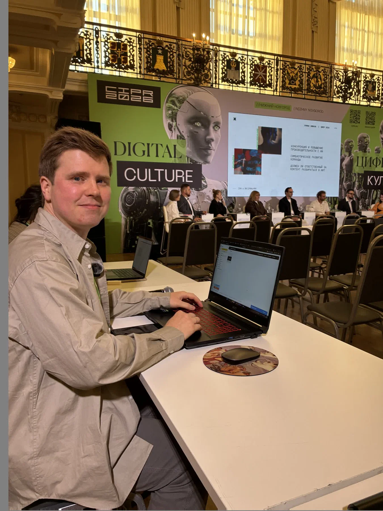
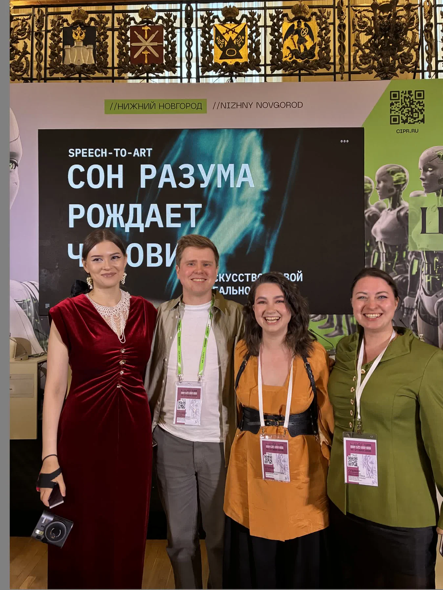

SPEECH-TO-ART / CIPR · «SPEECH-TO-ART / ЦИПР»
Nizhny Novgorod · 2026
Participation in a performance with the Institute of Visual Arts.
Visual performance
Event photographs


Nizhny Novgorod · 2026
Participation in a performance with the Institute of Visual Arts.

